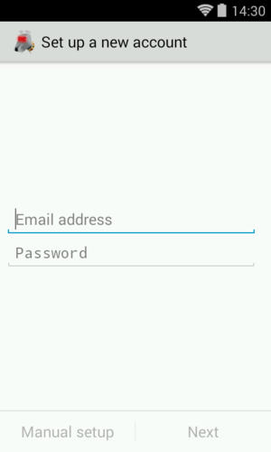
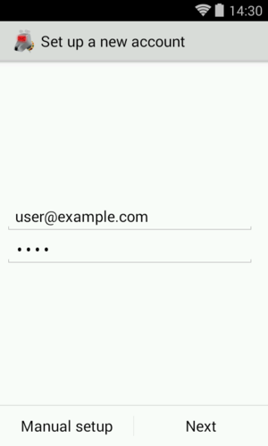
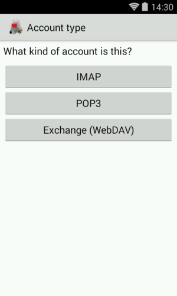
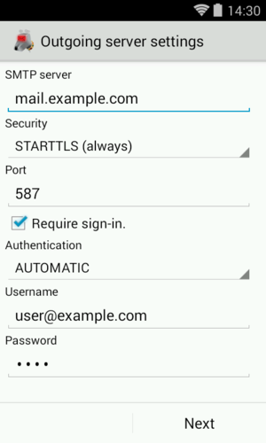
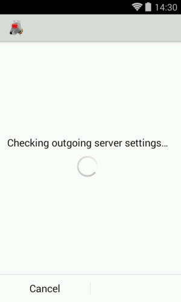
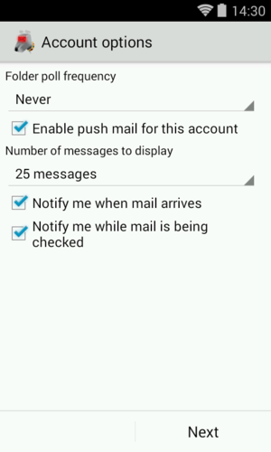
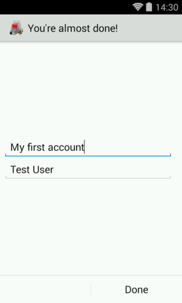

Add an Account
The account set-up wizard will launch automatically after the Welcome Screen.
For any additional accounts they can be added by going to the accounts menu, and then tapping the 'Add account' option in the overflow menu.
First you are asked for your email address and password.
The buttons "Manual setup" and "Next" become only activated after a correctly formatted email address and a password have been typed in.
 
If you choose "Next" and the domain part of your email address is known to K-9 Mail, the connection settings for the incoming and outgoing server are automatically set up for you. This is the case for some large email providers, e.g. Gmail, Yahoo!, and AOL.
We also list information on the settings for major e-mail providers.
Account Type
If you need to configure it manually, you will need to first choose an account type. The available options are POP3, IMAP, and WebDAV (supported by Exchange versions up to 2007).
All of these are names of protocols to access your mailbox. If your email provider supports it, we strongly recommend you use IMAP. It is superior to the others and well supported by K-9 Mail.
For more information see the linked Wikipedia entries:

Incoming Server Settings
To configure your incoming server settings see the corresponding page
Configuring the outgoing server
To be able to send mail K-9 Mail needs to know the settings to your provider's SMTP server. In this step of the account creation process you have to provide those details. Below is an explanation of the different settings. In certain circumstances, you may need to use a different outgoing server than you'd expect; we'll discuss those later.
Because of the nature of email service, you often (if not always, these days) send outgoing mail to one server, but pick up incoming mail from a separate one; this is why many of the items below say "this is often, but not always, the same as the setting for incoming mail".

SMTP server: This is the hostname or IP address of your SMTP server. As discussed above under IMAP Server, this name or IP must be accessible from any network from which you may want to send mail, whether your cellular carrier's WAN or a private LAN via Wi-Fi. See below for more details if you have trouble.
Security type: This specifies the cryptographic protocol that should be used when connecting to your SMTP server. Available options are:
- None: This doesn't use any transport security at all.
- SSL/TLS (if available): SSL/TLS is used but the certificate isn't checked.
- SSL/TLS (always): SSL/TLS is used and it's checked if the certificate is valid.
- STARTTLS (if available): The STARTTLS method is used if available; the certificate isn't checked. If STARTTLS is not available, no encryption is used at all.
- STARTTLS (always): The STARTTLS method is used and the certificate is checked for validity.
Port: The port number your provider's SMTP is listening on. This may be 465 or 587, and in rare cases 25, depending on the configuration and transport security settings of your server and K-9.
Require sign-in: Tells K-9 Mail whether or not it will be expected to authenticate to the server. In almost all cases this needs to remain checked.
Authentication type: This specifies which authentication method to use. Available options are:
- AUTOMATIC: This is the default method that will automatically detect which authentication methods are supported. You shouldn't need to change this.
- LOGIN: This uses the LOGIN authentication method.
- PLAIN: This uses the PLAIN authentication method.
- CRAM_MD5: Use this if your server doesn't support transport security but supports the CRAM_MD5 authentication method.
Username: The username that's needed to authenticate to the SMTP server. This is usually equal to either the left-hand side of, or the entire, email address; your mail server operator should have told you what to use as an Outgoing username -- and it will commonly be identical to the incoming username, though not always.
Password: The password that's needed to authenticate to the SMTP server. This is often, though not always, identical to the password for the incoming server.
To complete the outgoing server configuration click "Next". And again, K-9 Mail tries to connect to the server to verify the settings you just entered.

Account options
After successfully setting up the incoming and outgoing servers, you can now configure some basic settings on how often K-9 Mail checks for new messages, if you want to be notified of new mail, etc. These settings are specific to each account/mailbox you configure; you can set them differently for different mailboxes.

Folder poll frequency: Here you specify in what interval K-9 Mail should check the incoming server to see if there are new messages. Available options are:
- Never
- Every minute
- Every 5 minutes
- Every 10 minutes
- Every 15 minutes
- Every 30 minutes
- Every hour
- Every 2 hours
- Every 3 hours
- Every 6 hours
- Every 12 hours
- Every 24 hours
Enable push mail for this account: This option is only available for IMAP accounts. When it is enabled a long-lived connection to the IMAP server is established so K-9 Mail can be notified by the server when a new message has arrived. When this is set, you do not need to select a poll frequency, because you do not poll.
This decreases delivery notification delay and thus for some it is worth choosing a mailbox based on the provider support for IMAP IDLE. Note that it may require multiple connections which might not be supported or undesired by the server administration.
Number of messages to display: This value determines how many messages are kept locally cached and displayed. Available options are:
- 25 messages
- 50 messages
- 100 messages
- 250 messages
- 500 messages
- 1000 messages
- all messages
Higher values have some performance implications. See Local folder size for more information.
Notify me when mail arrives: If this is checked you are notified when a new message was downloaded in this mailbox. Notification type (LED, vibration) and ringtone can be configured later. See Notifications for more information.
Notify me while mail is being checked: If this option is enabled K-9 Mail will inform the user when an account is being synchronized by displaying a message in the Android title bar.
Last step
To complete the account creation you have to fill out the following two fields:

Give this account a name (optional): This is the name of the account that will be displayed in the account list. If you leave this field empty the email address associated with this account will be used.
Type your name: This will be used as your name for messages sent using this account.
Once you've done this, click "Done", and the account will be completely set up.